Universidade da Beira Interior
21-10-2006
Problem H
How Many?
Let us consider paths in the plane integer lattice
Z × Z consisting only of steps (1,1) and
(1,−1) and which never pass below the x-axis. A peak at
height k is then defined as a point on the path with coordinate
y=k that is immediately preceded by a (1,1) step and
immediately followed by a (1,−1) step. The pictures below show two
such paths: on the left picture we have 4 peaks (2 peaks at height
2 and 2 peaks at height 3); while on the right picture we have 3
peaks (1 peak at height 1, 1 peak at height 2 and 1 peak at height
3).

Problem
The problem consists of counting the number of admissible paths
starting at (0,0) and ending at (2n,0) with exactly r peaks
at height k.
Input
The input file contains several test cases, each of them consists of one line with the natural numbers n,
r and k which define the problem (first number gives n, second
number r, and the last one k). Assume that 1 ≤ n < 20,
0 ≤ r < 20, and 1 ≤ k < 20.
Output
For each test case, the output is a single integer on a line by itself, answering the problem, being guaranteed to be less than 231.
Sample Input
3 1 2
10 3 2
Sample Output
2
2002
Maratona Inter-Universitária de Programação 2006
MIUP'2006
Author: Delfim Torres (Universidade de Aveiro)